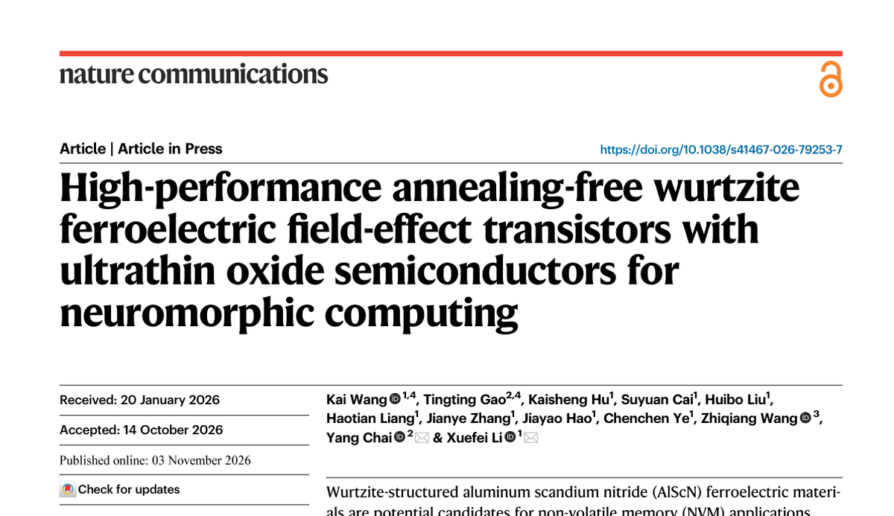

Nov2026
Paper published in Nature Communications

Wurtzite ferroelectrics normally need a high-temperature anneal, which rules out back-end-of-line integration. Working with ultrathin oxide semiconductors, the group reports devices that reach their ferroelectric state without any annealing step, and uses them to build synaptic transistors for neuromorphic computing.